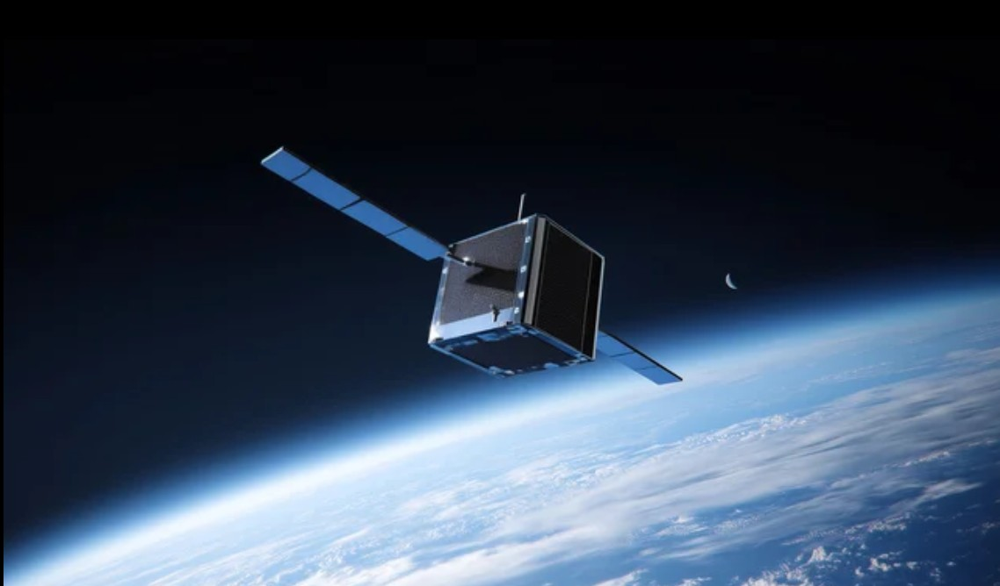

Память о близком —
на орбите Земли
Сервис отправки праха усопшего на околоземную орбиту
ОбсудитьЕсли вы здесь — значит, ваш близкий человек был действительно легендарным. Только такие люди покидают пределы земной атмосферы — неважно, при жизни или после. Нам остаётся склонить голову и рассказать, как это возможно технически.

В 2027 году ракета Falcon 9 компании SpaceX в рамках одной из миссий Transporter выведет на низкую околоземную орбиту кубсат Remembrance.
CubeSat — сверхмалый искусственный спутник Земли, который собирают из стандартных блоков 10×10×10 см. Один такой блок называется юнитом, или 1U. Наш спутник — формат 3U: внутри размещаются капсулы с прахом.
Достигнув заданной орбиты, кубсат отделяется от разгонного блока и начинает самостоятельный полёт. Аппарат остаётся на орбите около пяти лет, после чего под влиянием притяжения Земли сходит с неё и возвращается в атмосферу.